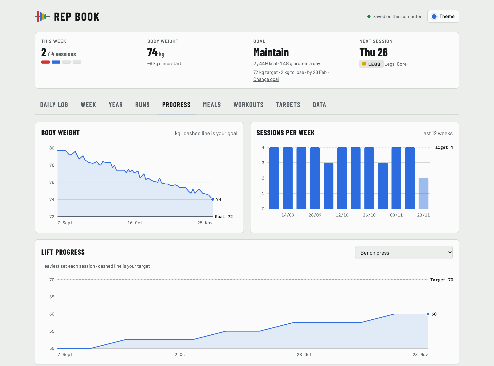
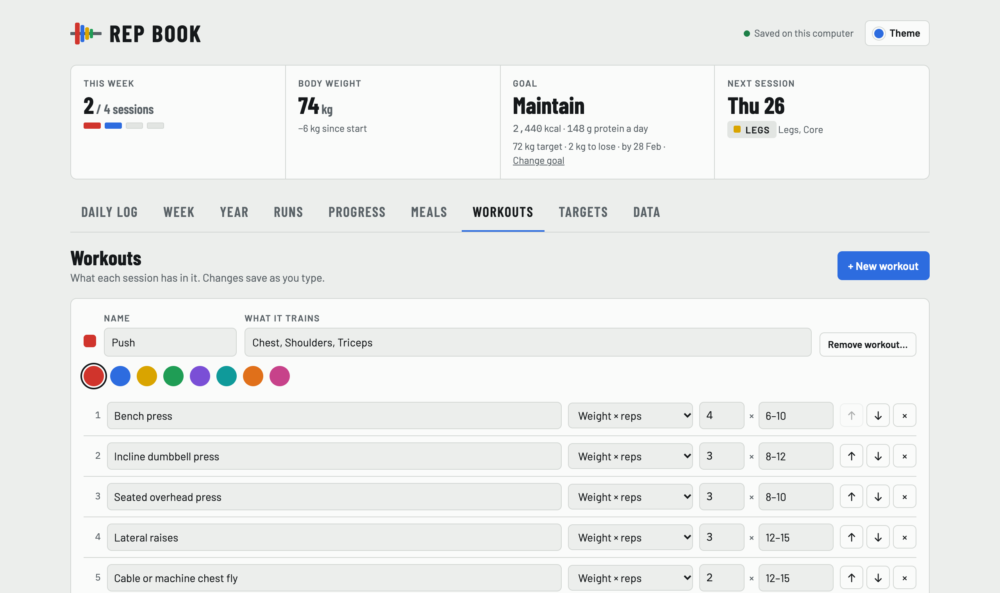
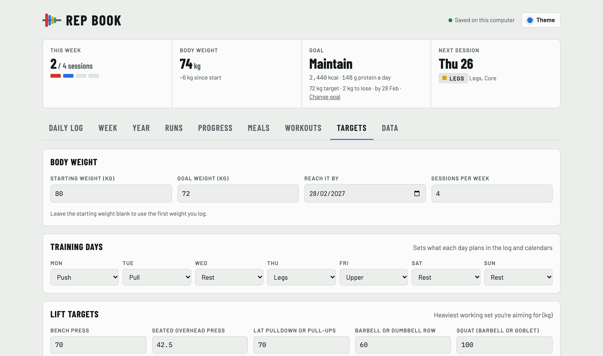
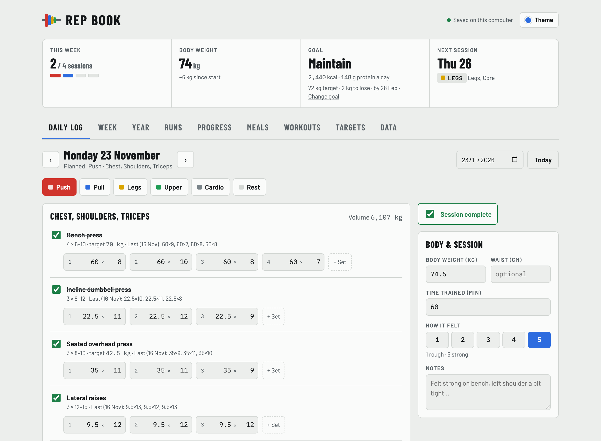
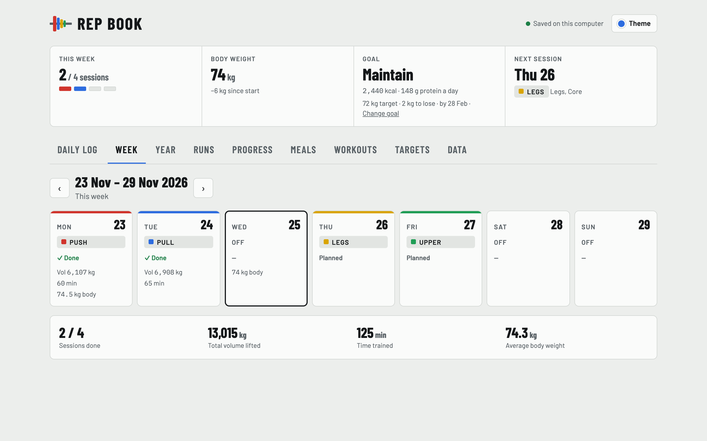
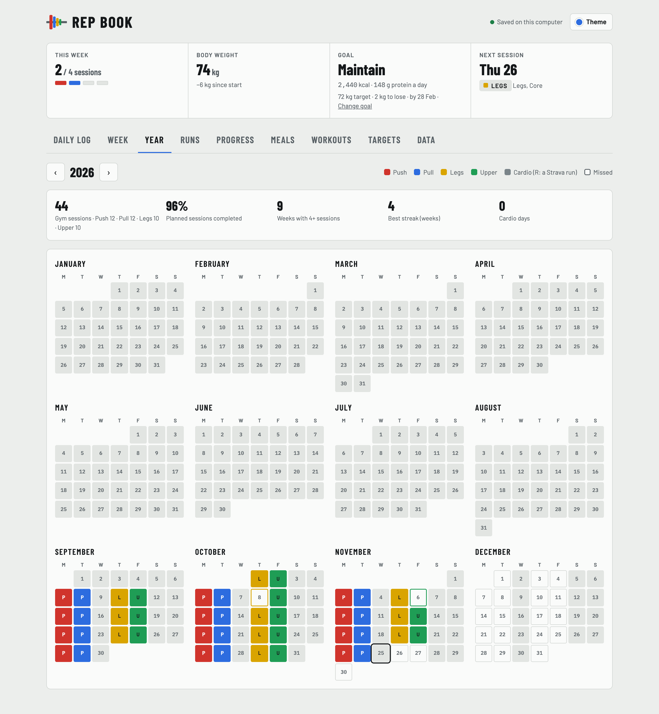
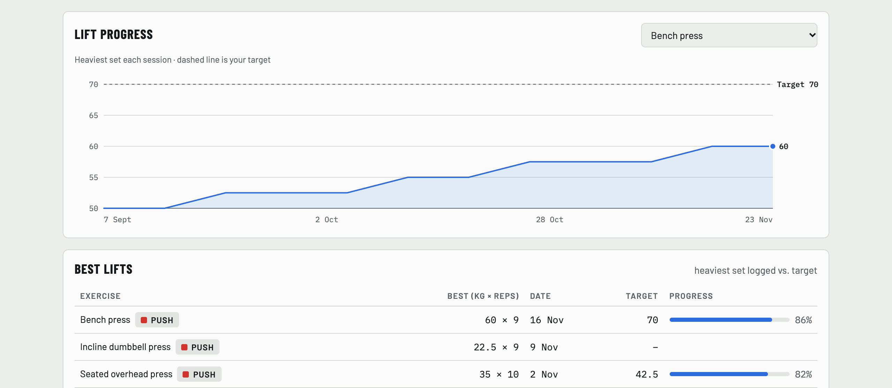

Last time, right there
Each exercise shows what you did in your previous session, so you know what to beat today.
Your own plan
It starts with a four-day split (Push, Pull, Legs, Upper) and you can change the exercises, sets and reps.
Stays on your computer
Your log is saved in a folder on your own machine. You can make backups and export it to a spreadsheet.
A walk through Rep Book
Follow one lifter, from setting up the plan to looking back on ten weeks of training. The names and numbers below are made up for the example.
-
Check the plan and change what you like
Open the Workouts tab. Each session lists its exercises with sets and reps, and you can rename them, reorder them, remove them or add your own. You can also pick a colour for each session or make a new one with the "+ New workout" button.

The Push session, one of the four sessions in the starting plan. -
Set your goals and training days
On the Targets tab, enter your starting weight, the weight you want to reach and by when, and how many sessions you aim for each week. Choose which session falls on which day, and type in a target for the lifts you care about.

-
Log today's session
On the Daily Log tab, pick the day and the session. Type the weight and reps for each set, tick each exercise when you finish it, and tick Session complete at the end. Beside the exercise name you see your target and the sets from your last session. On the right you can add your body weight, time trained, how it felt from 1 to 5, and a note.

-
See how your week went
The Week tab lays out Monday to Sunday. Each day shows its session, whether it is done or still planned, the total weight lifted, the minutes trained and your body weight. A summary underneath totals the sessions, volume and time for the week.

-
Look back over the year
The Year tab is a calendar where each session you completed is a coloured square: red for Push, blue for Pull, yellow for Legs and green for Upper. Days you planned but skipped show an empty outline. The numbers at the top count your sessions, the share of planned sessions you finished, and your longest run of good weeks.

-
Check your progress
The Progress tab draws your body weight against your goal, how many sessions you did each week, and the heaviest set of each session for any lift you choose. A table below lists your best set for every exercise and how close it is to your target.

Get Rep Book
Rep Book runs on your own computer and opens in your web browser. There are no installers yet, so for now you run it from the code. It works on Mac, Windows and Linux.
- Install pixi from pixi.sh. It sets up everything else Rep Book needs.
- Download the Rep Book code from the link below and open a terminal in that folder.
- Type
pixi run startand press Enter. Rep Book starts and opens in your browser. - Rep Book has no password. It prints a sign-in link when it starts, and the page opens through that link, so other websites cannot read your log.